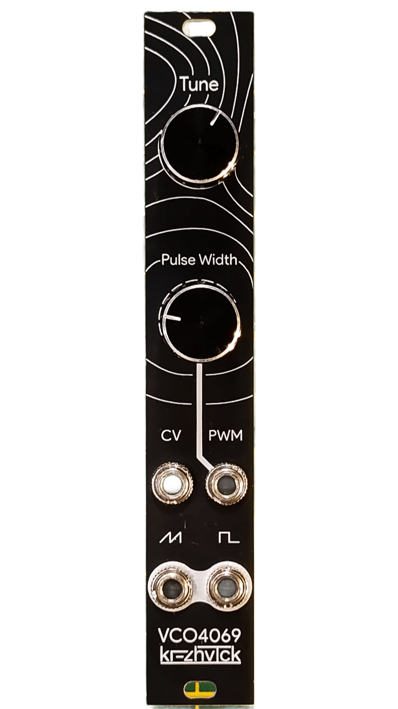
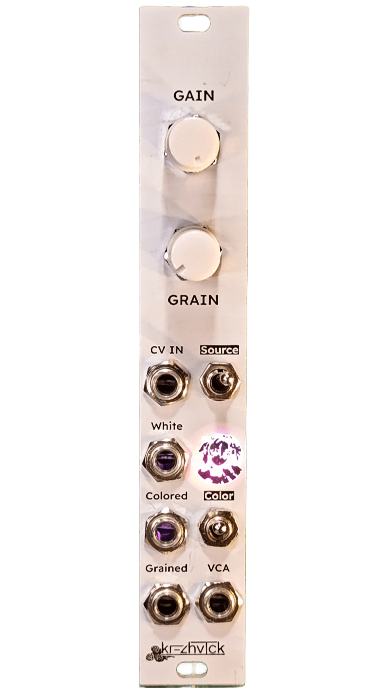
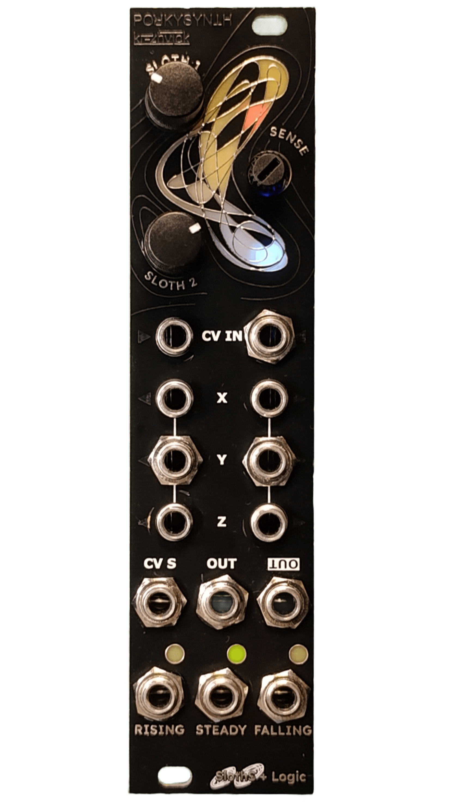

Модули
Линейка модулей kms
Аналоговый генератор пилообразных и прямоугольных волн на основе CD4069UBE. Основан на схеме VCO4069 за авторством Рене Шмитца.
- Выход пилообразного сигнала
- Выход прямоугольного сигнала
- 1V/oct
- PWM CV

Генератор шумовых сигналов и перкуссии.
- Выход белого шума
- Выход цветного (розового/синего) шума
- Выход гранулированного шума
- Внутренний транзисторный VCA + CV вход
- Внутренний decay
- Общий регулятор уровня громкости

Совместный модуль с POЯKYSYNTH. Два хаотичных, медленных LFO, основанных на Sloth Chaos с добавлением Sloth Detector закроет большую часть ваших потребностей в случайных CV-сигналах, гейтах и триггерах.
- Два хаотичных LFO, двигающихся независимо друг от друга
- Три различных выхода --- X, Y, Z --- для каждого LFO.
- Выход суммы Σ и выход инвертированной суммы Σ двух LFO
- CV-входы и потенциометры для незавимого управления частотой обеих LFO
- Slope Detector, подвязанный к выходу Σ без подключения внешнего CV сигнала и выходы Falling, Steady, Rising

Два аналоговых осциллятора на основе микросхемы CD4069UBE. Сильно модифицированная версия VCO4069/kms000 за авторством Рене Шмитца. В kms003, в отличие от kms000, в качестве ядра осциллятора используется не вся CD4069, а только её половина --- поэтому стало возможно реализовать два независимых осциллятора на одной схеме. Также схема использует два ОУ TL074 для буферизации и вейвшейпинга сигнала --- все выходные каналы имеют амплитуду 10Vpp и одинаковый питч между собой.
- Выход пилообразного сигнала
- Выход прямоугольного сигнала
- Выход треугольного сигнала
- Выход синусоиды
- 1V/oct CV
- PWM CV
- CV2 подключается к CV1, если ничего не подключено к входу CV2
- Sync для первого осциллятора, переключатель октав для второго

Восьмиканальный аналогово-цифровой микшер с 80 шагами аттенюации, управляемый по миди. Нативно работает с микшером M-VAVE SMC-MIXER в режиме CC.
- 8 моно-входов
- 1 моно-выход
- Mute/solo индикация для каждого канала
- Разработан специально для USB-MIDI контроллеров

Источник питания для небольших кейсов на основе DC-DC конвертера MAX775. Работает от адаптеров на +12V.
- +12V: soon™ A
- -12V: 0.4 A
- 5V: вплоть до 1.5 A

Soon™
- 5+ шейперов
- 5+ эффектов
- Очень красивый UI на круглом IPS-экране (ну точно не копирка Thermal VST!)
- Telegram-канал. Напишите в личные сообщения канала или в комментарии под любым постом, я отвечу в течение часа с 08:00 до 23:00 по МСК.
- Авито. Терпеть не могу Авито, поэтому там наценка на все товары (просто за факт размещения) + отвечаю раз в 2-3, а то и раз в 6-8 дней.
- Почта: aerospaceemusic@gmail.com
- Скидки не будет. Торга нет. Я придерживаюсь той же политики ценообразования, что и Factorio --- цена будет только расти. Впрочем, иногда цена снижается, если дешевеют компоненты.
- Доставка преимущественно через OZON Посылки. Если вы в СПб — можно договориться о встрече.
- "Собранный модуль" означает, что модуль будет не только собран, но и откалиброван/настроен/прошит перед отправкой и вы получите готовое устройство. С кабелем.